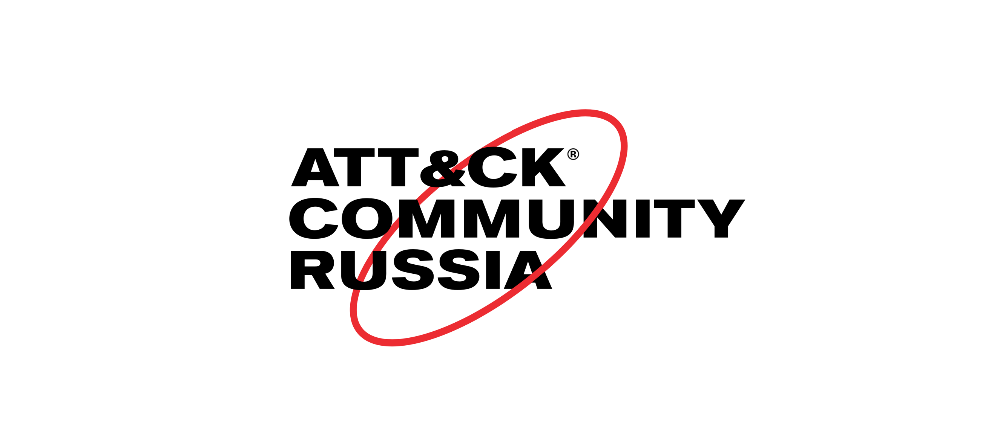

Дискуссия #4: Перевод FAQ
Статус
Дискуссия завершена.Проблема
Официальный FAQ MITRE ATT&CK оказался крайне нераспространенным документом в русскоязычной среде, при всей его познавательной ценности для сообщества как в перспективе, так и для текущей работы по созданию единого перевода названий тактик.Цель
Совместно разработать перевод официального FAQ MITRE ATT&CK.Результат
Перевод опубликован в статье на Хабр и на сайте сообщества в разделе Вопросы и ответы.Хронология
| Дата | События |
|---|---|
| 28.01.2022 | Разработан первый черновик перевода. Началась совместная работа над переводом. |
| 30.03.2022 | Разработан второй черновик перевода. Опубликован в статье на Хабр. |
| 14.09.2022 | Завершена работа над переводом. |
Участники
- Антон Шипулин, сооснователь RUSCADASEC
- Олег Скулкин, Руководитель лаборатории цифровой криминалистики и исследования вредоносного кода Group-IB
- Илья Енин, SOC Analyst Team Lead, Kaspersky Lab
- Ольга Моск, редактор, переводчик, менеджер проектов Positive Technologies
- Евгений Зудилин
- Даниил Югославский, волонтер Russians for Ukraine
Архив
Оригинальные сообщения доступны в дискуссионной комнате. Веб-версия обсуждения сохранена для индексации поисковыми системами. Zip-архив обсуждения сохранен для обеспечения целостности (неизменности), которая гарантируется хеш-функцией SHA-256:| $ shasum -a 256 archive/dc_4.zip 4b350895f49ffd77018d75e71e83115142b3c7240f80334c2ba4cdb596f7d49c archive/dc_4.zip |